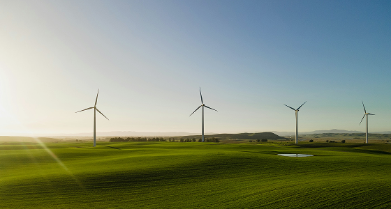
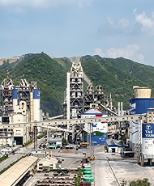
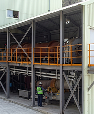
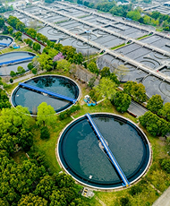
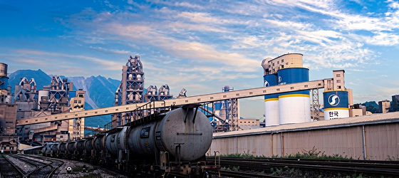

ESG경영
ESG경영
환경경영
미래와 환경, 인간존중을 지향하는Leading Company, 한일시멘트

- 선진 환경친화 경영체계 확립
- 자원 순환형 제조관리 시스템 지향
- 지역사회와 함께하는 환경공동체 확립
- 자연환경보전을 위한 친환경적 채광·개발
환경보전활동
환경을 최우선 경영방침으로 설정하고 맑은 공기를 보전하는 약속을 지켜가고 있습니다.
-

01 대기환경관리전기집진기를 최첨단 여과집진기(Bag House)로 교체. 소성시설·냉각시설 운영
-

02 질소산화물 저감SNCR 설비로 배연탈질 처리, 저감설비 고도화를 지속 검토
-
03
Clean SYS 운영
굴뚝자동측정시스템으로 실시간 측정, 환경부· 환경공단에 자동 전송
-

04 수질환경관리제조공정 특성상 폐수 배출이 없으며, 세차수·생활오수는 정화시설로 처리
6가크롬 관리 — 3년 연속 개선
기업자율기준 20mg/kg보다 훨씬 엄격하게 관리하며, 국립환경과학원이 매월 랜덤 검사로 검증합니다.
- 7.8 2023년
- 4.3 2024년
- 3.3 2025년
기후변화대응
에너지사용량과 온실가스 배출량을 총괄 관리하는 인벤토리를 구축해 국가 목표관리제도에 적극 대응하고 있습니다.
- 751만 2020
- 810만 2021
- 805만 2022
- 727만 2023
- 679만 2024

-
30%
폐열발전 전력 대체
단양·영월공장 소성공정 폐열로 발전, 연 20만MWh 생산 — 약 92,000tCO₂ 저감
-
220만톤
슬래그시멘트 생산능력
포항·평택 설비 연산 220만톤 — 클링커 대체로 생산 과정의 온실가스 감축